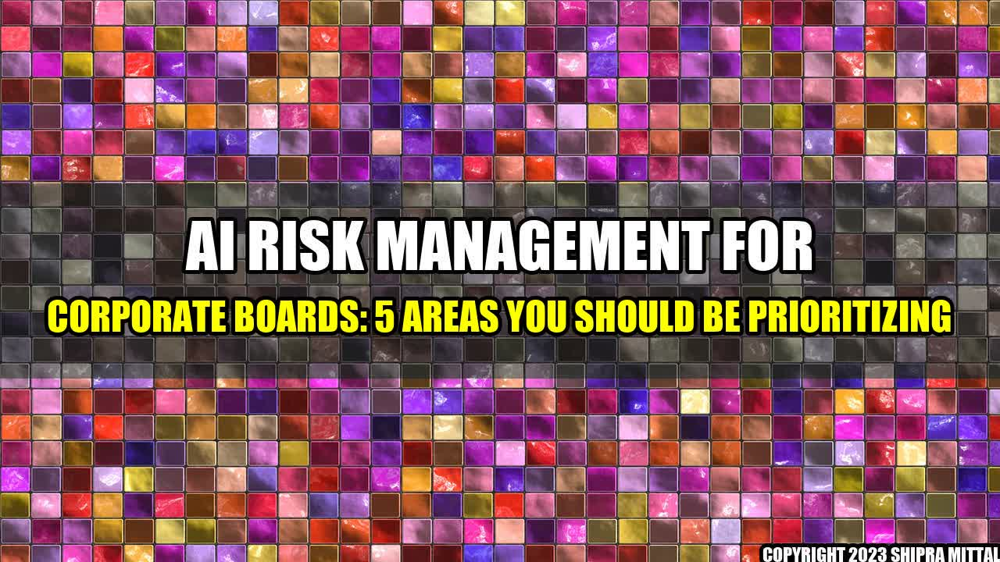

AI Risk Management For Corporate Boards
5 Areas You Should Be Prioritizing
Once upon a time, a global corporation implemented an AI-powered chatbot to improve customer experience. The chatbot was a great success, handling thousands of queries daily and freeing up customer service agents for more complex issues. However, the corporation soon realized the chatbot was not only answering customers' questions, but also collecting sensitive data that could be a serious security risk if leaked or hacked. The corporate board had to act fast to mitigate the potential risk and ensure the chatbot was compliant with data privacy regulations...
Introduction
As AI technologies continue to transform the business landscape, they bring significant opportunities and challenges for corporate boards. On one hand, AI can enhance operational efficiency, automate decision-making, and unlock valuable insights from vast amounts of data. On the other hand, AI can also introduce new and complex risks, including cybersecurity threats, ethical dilemmas, data privacy concerns, and social impacts that could damage reputations, bottom lines, and even stakeholders' trust.
To mitigate these risks and maximize the benefits of AI, corporate boards must take a proactive and strategic approach to AI risk management. In this article, we will outline five essential areas that corporate boards should prioritize in their AI risk management efforts. These areas are based on industry best practices and expert insights:
- Business analytics and decision-making
- Cybersecurity and data protection
- Data governance and ethics
- Regulatory compliance and legal considerations
- Human capital and social responsibility
By focusing on these areas, corporate boards can ensure a holistic and robust AI risk management framework that aligns with their organization's goals, values, and stakeholders' expectations.
1. Business Analytics and Decision-Making
AI technologies enable businesses to collect, analyze, and act upon vast amounts of data in real-time. This capability can provide a competitive edge in terms of speed, accuracy, and innovation. However, it also raises concerns about bias, accuracy, and accountability in decision-making processes. Corporate boards should ensure that their boards' data analytics and decision-making practices are transparent, auditable, and unbiased. Here are some tips:
- Establish clear goals and metrics for AI projects that align with the business strategy and stakeholders' expectations.
- Ensure that data used in AI models are diverse, representative, and accurate, and regularly monitor and audit the algorithms to detect and mitigate bias.
- Involve a diverse group of stakeholders, including subject matter experts, data scientists, and ethicists, in all stages of AI development and deployment.
- Provide adequate training and resources for employees to understand and use AI effectively and responsibly.
- Have a crisis management plan in place to respond quickly and transparently to any AI-related incidents or failures.
Example: In 2018, Amazon scrapped its AI-powered recruiting tool after discovering that it was biased against women. The tool, which was designed to analyze resumes and rank candidates, was trained on resumes from the previous 10 years, which were dominated by men. As a result, the tool downgraded resumes with terms such as "women" or "female" and favored candidates who attended all-male universities. The incident highlights the importance of diverse and representative data in AI models and the need for regular monitoring and auditing to detect and mitigate bias.
2. Cybersecurity and Data Protection
AI technologies can create new vulnerabilities and threats to cybersecurity and data protection, especially when they involve sensitive or personal information. Corporate boards should ensure that their organization's cybersecurity and data protection policies and practices are up-to-date, robust, and compliant with relevant regulations. Here are some tips:
- Conduct regular cybersecurity risk assessments to identify and prioritize potential threats and vulnerabilities.
- Implement strong access controls, authentication, and encryption mechanisms to protect data at rest and in transit.
- Establish clear policies and procedures for data collection, use, retention, and disposal, and ensure that they are communicated and enforced throughout the organization and its partners.
- Develop a comprehensive incident response plan that includes roles, responsibilities, and procedures for detecting, reporting, containing, and recovering from cybersecurity incidents.
- Provide adequate training and resources for employees and partners to understand and comply with cybersecurity and data protection policies and best practices.
Example: In 2017, Equifax, one of the largest credit reporting agencies in the US, announced a massive data breach that exposed the personal and financial information of 147 million people. The breach was caused by a vulnerability in a web application framework that Equifax failed to patch. The incident illustrates how AI-enabled threats such as automated attacks and bots can exploit human errors and weaknesses in the security infrastructure, and the importance of continuous monitoring and testing to detect and fix vulnerabilities.
3. Data Governance and Ethics
AI technologies raise ethical and governance challenges related to transparency, accountability, and responsibility for the decisions they generate. Corporate boards should ensure that their organization's data governance and ethics policies and practices are aligned with ethical values and societal norms and that they respect users' rights to privacy, autonomy, and dignity. Here are some tips:
- Establish clear principles and guidelines for data privacy, transparency, explainability, and accountability in AI systems and ensure that they are communicated and understood throughout the organization.
- Ensure that AI models and algorithms are audit-ready and that their decision-making processes can be traced and explained if needed.
- Consider the potential impacts of AI on society, communities, and the environment, and address them proactively and transparently.
- Engage with stakeholders, experts, and regulators to address ethical and governance challenges and ensure that AI delivers benefits and avoids adverse impacts.
- Regularly review and update data governance and ethics policies and practices to align with changing technologies, regulations, and societal expectations.
Example: Google's Project Maven, which aimed to develop AI-powered drones for the US military, raised ethical concerns among Google employees and outside experts, who argued that the technology could be used for lethal purposes and violate human rights. The controversy led Google to withdraw from the project and adopt a set of ethical principles for AI development. The incident highlights the importance of ethical values and principles in AI governance and the need for transparency, accountability, and engagement with stakeholders.
4. Regulatory Compliance and Legal Considerations
AI technologies are subject to various regulations and laws related to data privacy, intellectual property, consumer protection, and other areas. Corporate boards should ensure that their organization's AI projects comply with relevant regulations and laws and that they mitigate legal risks and liabilities. Here are some tips:
- Conduct a thorough legal and regulatory review of AI projects and consult with legal experts to identify and mitigate potential risks and liabilities.
- Ensure that AI projects comply with relevant data protection regulations, such as GDPR, CCPA, and HIPAA, and that they respect users' rights to privacy and data control.
- Protect intellectual property rights related to AI technologies, such as patents, trademarks, and copyrights, and ensure that they are properly licensed and enforced.
- Ensure that AI systems do not violate antitrust regulations or engage in unfair competition practices that harm consumers or competitors.
- Provide adequate training and resources for employees and partners to understand and comply with relevant regulations and laws and to mitigate potential legal risks and liabilities.
Example: In 2019, the Federal Trade Commission (FTC) fined Facebook $5 billion for its alleged failure to protect users' data from unauthorized access and sharing with third-party apps. The fine, which is the largest ever imposed by the FTC, highlights the importance of complying with data protection regulations and the potential legal and financial consequences of non-compliance.
5. Human Capital and Social Responsibility
AI technologies have implications for human capital and social responsibility, ranging from jobs displacement to bias and discrimination to social inequality and exclusion. Corporate boards should ensure that their organization's AI projects are socially responsible and that they promote diversity, inclusion, and equity. Here are some tips:
- Assess the potential impacts of AI on the workforce, including the risks of job displacement and changes in skill requirements, and develop plans to mitigate negative impacts and promote reskilling and upskilling.
- Ensure that AI systems are designed and tested to be unbiased and non-discriminatory and that they respect diversity and inclusion principles.
- Engage with stakeholders, including employees, partners, customers, and communities, to understand their concerns and needs and to promote social responsibility and ethical AI.
- Participate in relevant industry groups, standards bodies, and initiatives to share best practices and promote responsible AI development and deployment.
- Consider the potential social impacts of AI, such as job displacement, inequality, and exclusion, and develop plans to address them in collaboration with other stakeholders and policymakers.
Example: In 2020, IBM announced that it would no longer offer facial recognition technology for mass surveillance or racial profiling, citing concerns about bias and human rights violations. The move reflects IBM's commitment to ethical values and social responsibility and shows how corporations can use their influence to promote positive social impacts of AI.
Conclusion
Corporate boards have a critical role to play in AI risk management, and they must prioritize their efforts to ensure a holistic and responsible approach. By focusing on the five essential areas of business analytics and decision-making, cybersecurity and data protection, data governance and ethics, regulatory compliance and legal considerations, and human capital and social responsibility, corporate boards can maximize the benefits and minimize the risks of AI technologies and create sustainable value for their organizations and stakeholders.
- Establish clear goals, metrics, and guidelines for AI projects that align with the business strategy and stakeholders' expectations.
- Ensure that AI systems are secure, transparent, and accountable, and that they comply with relevant regulations and laws.
- Promote diversity, inclusion, and equity in AI development and deployment and engage with stakeholders to address ethical, social, and governance challenges.
Curated by Team Akash.Mittal.Blog
Share on Twitter Share on LinkedIn